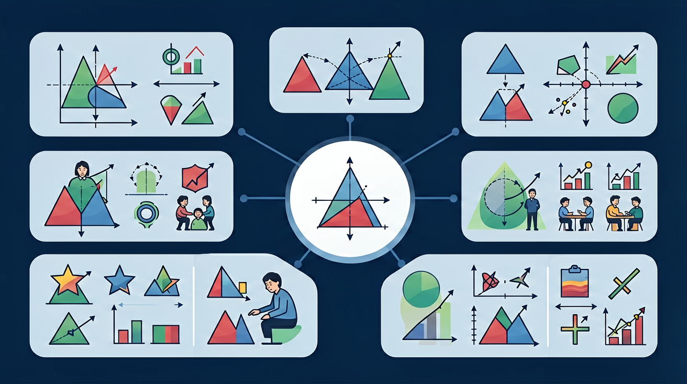

❓ 为什么分东西时要平均分？
❓ 除法里的‘除’和‘除以’有啥区别？
❓ 余数为什么总比除数小？
学完这一课，这些问题你都能自信地回答。
🎯 能说出除法算式中各部分的名称（被除数、除数、商）
🎯 能判断等分除和包含除的实际场景差异
🎯 能计算表内除法（被除数≤81）并验算
✨ 用乘法口诀学除法，分东西超简单！

🌍 And（已知）：我们已经学会了乘法
⚡ But（问题）：但如何把一堆东西平均分给几个人？
💡 Therefore（新知）：因此我们学习除法，它是乘法的逆运算，帮我们解决平均分配问题
把 12 颗糖果平均分给 3 个小朋友，每人得 4 颗。这就是除法！
除法就是平均分的运算。
12 ÷ 3 = 4，读作：十二除以三等于四
被除数 ÷ 除数 = 商
除法是乘法的逆运算！
💡 用乘法口诀背除法，事半功倍！
求 24 ÷ 6 = ?
想口诀：六 × ? = 二十四
六四二十四，所以商是 4！
| × | 1 | 2 | 3 | 4 | 5 | 6 | 7 | 8 | 9 |
|---|
👆 点击格子查看口诀
🎯 把算式和答案配对！
算式
商
💡 常见错误往往就在细节中，仔细检查每一步！
回忆：今天学了哪些关键词和规则？试着说出来。
用自己的话解释今天学的核心概念，不看书能说清楚吗？
用今天的知识解决一个实际问题，或写一个新例子。
把今天的知识与已有知识联系起来：有什么共同点？有什么区别？能不能自己创造一道新题？
先独立作答，再点选项查看对错与错因。
老师有24个苹果，要平均分给6个小组，每个小组分到多少个苹果？
如果老师有30个苹果，要平均分给5个小组，每个小组分到多少个苹果？
老师有18个苹果，要平均分给3个小组，每个小组分到多少个苹果？
老师有____个苹果，要平均分给4个小组，每个小组分到5个苹果。
答案：20
每个小组分到5个苹果，4个小组共需要20个苹果。
老师有15个苹果，要平均分给____个小组，每个小组分到3个苹果。
答案：5
每个小组分到3个苹果，15个苹果可以分给5个小组。
以下哪个选项最能解释'平均分'的含义？
假设老师有不同数量的苹果和不同数量的小组，如何确定每个小组分到的苹果数量？
用分小棒演示12÷3=4的两种分法：①分3份每份4根 ②每次分3根能分4次
除法是连减的简便运算，如8÷2=4相当于8-2-2-2-2=0
对比乘法口诀‘三七二十一’与除法‘21÷7=3’的逆运算关系
用分披萨动画展示6÷2=3即把6块披萨平均分给2人，每人3块
用除法解决‘24人租船，每船坐4人，需几条船？’的实际问题
✅ 强调‘除以’与‘除’不同，用划线法标注被除数
💡 混淆数学语言表达
✅ 关联乘法口诀‘三七二十一’反向记忆
💡 乘法口诀逆运用不熟练
✅ 用‘余数必须躲进制数房子’比喻强化记忆
💡 未理解余数定义
口诀：除法不用怕，口诀倒着查；平均分两份，乘反就对啦！
类比：除法像分糖果，总数÷朋友数=每人得几颗
And：学生已掌握加减法和乘法基础
But：如何公平分配物品时不会列式
Therefore：理解除法是分配问题的数学表达
除法就像分糖果！比如有12块糖要分给3个小朋友，每人几块？我们可以用12÷3=4表示。÷叫除号，12是被分的总数叫被除数，3是分的人数叫除数，4是每人分到的结果叫商。看，除法就是把大数平均分成几份的快捷方法！
🌍 妈妈买回6个苹果，要你和妹妹平分，每人分几个？这就是除法！分披萨、发作业本都会用到它。
15个气球分给5个孩子，列式正确的是？
And：已会用除法符号表示分配
But：不理解算式中各部分的含义
Therefore：建立除法算式的完整认知模型
除法算式就像小工厂！以18÷2=9为例：被除数18是原料总数，除数2是分装流水线数量，商9是每条的产量。特别要注意余数——如果分17块糖给2人，17÷2=8…1，这个1就是余下的糖。记住：余数必须比除数小！
🌍 体育课24人分组跳绳，每组6人，能分几组？算式24÷6=4中，24是总人数，6是每组人数，4就是组数啦！
哪个算式表示把20本书放4个书架？